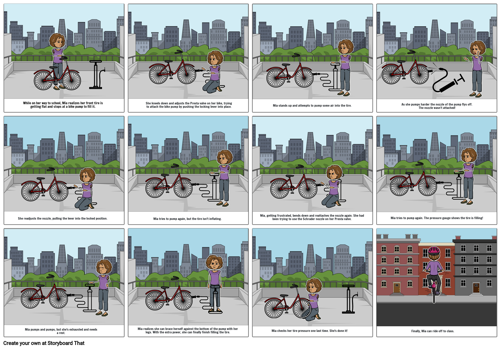

In this project, I wanted to get more experience doing user research
through interviews and espsecially creating personas.
Personas are a way of representing groups of users,
condensing behavior patterns and goals into the model of a single and
specific personification of a human being (Cooper 82).
Cooper, A., Reimann, R., Cronin, D., & Cooper, A. (2014).
About Face: The Essentials of Interaction Design (Fourth edition).
John Wiley and Sons.
The Interface
The first thing I did was choose an interface that users interact with.
I was curious about how the users found the process of using a bike pump that
I personally found confusing. The bike pump was in a busy, public area
which gave me a good oppurtinity to observe people interacting with it.
The bike pump it question is supposed to make it easy and convient to top off your bike tires.
the pump has four main interactive components:
The pumping handle, which is ridged for easy gripping, gives users
a place to hold on to and pump
The pressure gauge, which lists the air tire pressure in PSI and bar
The two nozzles, designed for the two most common types of bike
tires valves, Schrader and Presta valves
The latch for fastening on the nozzles onto the valve in an airtight lock
Annotated sketch of the bike pump - own work
To use the pump, the user must first open the valve to their bike tire
and then fit the correct nozzle over the valve. Once in place, the u
ser pulls the lever from the open (vertical) position to the closed
(horizontal) position, creating an airtight seal with the valve.
The user then pumps up and down with their hands on the handle,
bracing their feet against the bottom of the pump so they can use
the power in their legs. Each pump pushes air through the hose and
into the tire, increasing the pressure which is registered on the
pressure gauge. Once the tire is satisfactorily inflated,
the user pushes the lever back into the open position,
disconnects the nozzle, and closes their bike valve.
Observations
To investigate how users interacted with the bike pump I observed
three people using it, and interviewed them about the experience.
Broadly, there were two types of user behavior I observed: users that
were able to smoothly go through all of the steps, filling their tire
with little to no difficulty, and users who had numerous setbacks,
took longer, and became frustrated.
Some users rushed through each step, while others went through
each more slowly
Users who made mistakes tended to make multiple mistakes of which
the most common were:
Attempting to push instead of pulling the lever to lock the
nozzle in place, which would result in the nozzle disconnecting
when they began pumping
Unscrewing the top of their Presta valve, but not loosening
the valve core nut (which is a step needed only for Presta valves,
but not for Schrader valve), resulting in the valve not opening
and so the tire would not inflate
Trying to fit the wrong type of nozzle to the inappropriate valve
(Schrader nozzle on Presta valve or vice versa)
Not using their legs to brace themselves, resulting in
exhaustion as the pressure of the tire increased and they had to
use more and more arm strength to pump
Interviews
List of interview questions:
What did you hope to accomplish by using the bike pump?
How important to you was this objective?
When you approached the bike pump, what was your mental image of how it worked?
When looking at the bike pump, were there physical features that
helped you understand how to use it? If so, describe them.
Describe the most difficult part of using the bike pump.
How did it feel to use the bike pump? Describe the emotions
you were feeling, before, during, and after you were using it.
What were you most worried about while using the bike pump, if anything?
When using the bike pump, did you realize you needed more information to use it effectively?
Did your mental image of how the bike pump worked change after using it?
Having now used the bike pump, how would explain how it works and
how to use it to a five year old child?
Summary of my learning from the interviews:
Most users had a clear mental model of how the bike pump worked
which mostly matched the reality, but they didn't think of some
details like the importance of creating an airtight seal with the bike valve.
The shape of the pump handle and the valves helped users understand
how to operate the pump, but the shape of the lever made it difficult
for users to tell whether to push or pull it.
Many users felt a sense of urgency about filling their tires.
Although some users had a number of difficulties, by the end of
the interaction they were able to competently explain how to use
the pump to someone else.
Users felt publicly embarrassed when they made a mistake with the pump.
User Representations
I represented my users in two different ways: empathy maps and a
storyboard. The empathy maps summarized the persona, while the storyboard
show a persona in a typical interaction with the interface.
Empathy Maps
The empathy map for Mia, representing an archetypical inexperienced userThe empathy map for Sam representing an archetypical experienced user
Storyboard

A storyboard showing how a persona might interact with the interface.
Takeaways
Going through the process of collecting user data and creating personas
helped me think about the way a user's experiences and motivations affects
the way they might interact with an interface. When I started, I didn't
foresee there being such varied reactions to using a bike pump, but
the process revealed what I think is a broadly applicable tension
between experienced and novice users. Experienced users want greater
customizability to get the most out of a product, while beginners
are overwhelmed with even basic features and need more structure.
It is difficult to balance these competing demands on a design.